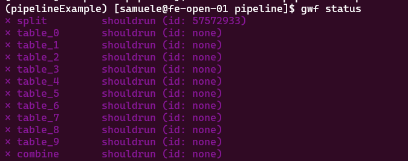

flowchart LR A0(["Start"]) --->|data.txt| A["Rename"] A --->|samples.txt| B(["End"])
Introduction to workflows on GenomeDK
Learn to create smooth pipelines and manage resources tinyurl.com/pipelinesGDK
Samuele Soraggi
Health Data Science sandbox, BiRC, AU
Manuel Peral-Vázquez
Molecular Biology and Genetics, AU
Dan Søndergaard
GenomeDK, Health, AU
2025-10-23
Some background
These slides are both a presentation and a small reference manual
We have hands-on as well, follow the slides from tinyurl.com/pipelinesGDK
Official reference documentation: genome.au.dk and gwf.app
Most important message before starting any workshop: RTFM - Read The Field Manual!
Please remember filling up the feedback at the end of the slides
When you need to ask for help
Practical help:
Samuele (BiRC, MBG) - samuele@birc.au.dk
Drop in hours:
- Bioinformatics Cafe: https://abc.au.dk, abcafe@au.dk
- Samuele (BiRC, MBG) - samuele@birc.au.dk
General mail for assistance
support@genome.au.dk
What you need
The basics to use the cluster
Being able to edit documents on the cluster
Have conda or pixi installed
If possible have a project on the cluster
Program
- 10:00-10:45:
- Workshop Introduction
- Background on workflows/pipelines
- Workflow file structure and templates
- A small example
- 11:00-12:00:
- Workflow for the exercise
- Prepare for the workflow: data, software, workflow file
- Investigate specific parts of the workflow
- Execute one or more targets
- Verify what happens with each target
- 12:45-13:45:
- calibrate your resources
- add a template and targets to a pipeline
- 13:45-14:00:
- Questions
- Feedback
Background on workflows
Workflow terminology
Workflow and W. Management System
A workflow is a series of calculations and data manipulations which have to be performed in a specific sequence.
A workflow management system organizes the workflow steps through defined dependencies, can assign different computing resources to each step, keeps a log of the workflow, interacts with a cluster’s queueing system.
flowchart LR A0(["Start"]) --->|data.txt<br>INPUT| A[Rename<br>TARGET] A --->|samples.txt<br>OUTPUT| B(["End"]);
A TARGET is a specific step in a workflow
Each target has a SPECIFICATION which describes what to do with the input files to produce the output files
The specification is usually a command line which can be executed in a terminal
Each target has INPUTS and OUTPUTS file(s)
flowchart LR A0(["Start"]) --->|data.txt<br>INPUT| A[Rename<br>TARGET] A --->|samples.txt<br>OUTPUT-INPUT| B[GZip<br>TARGET] B --->|samples.txt.gz<br>OUTPUT| C(["End"]);
- A target can be dependent on other targets, i.e. it needs their output files as input before it can run
flowchart LR A0(["Start"]) --->|data.txt<br>INPUT| A[Rename<br>TARGET<br>cores=4<br>memory=24g<br>walltime=00:01:00] A --->|samples.txt<br>OUTPUT-INPUT| B[GZip<br>TARGET<br>cores=1<br>memory=8g<br>walltime=00:10:00] B --->|samples.txt.gz<br>OUTPUT| C(["End"]);
- A target has settings for resources
- cores
- memory
- walltime (format
dd-hr:mn:sc) which are used to run the target on a cluster
Each target of the workflow
- is submitted by the workflow manager to the queueing system
- can be monitored with the workflow manager
- influences the queueing time Depending on requested resources
gantt
dateFormat HH:mm
axisFormat %H:%M
title Examplified HPC Queue Durations vs. Resources
section Small Job (1 core, 4GB, 1h)
Queue wait: active, 00:00, 0:10
Job start: active, 00:10, 1:00
section Medium Job (4 cores, 16GB, 2h)
Queue wait: active, 00:00, 0:45
Job start: active, 00:45, 2:00
section Large Job (16 cores, 64GB, 4h)
Queue wait: active, 00:00, 2:00
Job start: active, 02:00, 4:00
Workflow Management Systems
There are many workflow management systems available, e.g. Snakemake, Nextflow, Cromwell, Gwf, Airflow, Luigi, …
Most known in bioinformatics and in a production environment are Snakemake and Nextflow.
- Nextflow and Snakemake have a specific workflow language
- easier to learn for non-programmers
- more difficult to customize for programmers
- Nextflow is used in many production environments (e.g. nf-core pipelines) and in industry
- Gwf is written in python
- easier to customize
- requires some python knowledge but it is easy to pick up what is necessary
Pros and cons
Nextflow
Pros
- Popular, mature ecosystem (nf-core)
- Many production-ready pipelines
- Excellent container (Docker/Singularity) and cloud support (AWS, GCP)
- Strong reproducibility and portability
- Good for complex dataflow
Cons
- Uses a Groovy-based language
- Strep learning curve
- Less natural for custom code
- High runtime footprint
Snakemake
Pros
- Pythonic language — easy to learn
- Tight integration with conda, containers
- Workflows are concise
- Strong community and good documentation
- Good support
Cons
- Very large or highly dynamic workflows can become complex
- Not cloud-native as Nextflow is
Gwf
Pros
- Pure Python workflows — full flexibility
- Lightweight and pedagogical; easy to teach and tweak
- Fine-grained control of resources
- Good local/HPC integration
- Simple template reuse
- Strong local support at GenomeDK / AU
Cons
- Small community
- Less documentation
- mainly HPC-oriented
- No ecosystem tools
Gwf workflow manager
A lightweight and easy to adopt workflow manager. It requires only some basic Python - you can learn it along the way starting from examples. Some features:
- Developed at AU (Dan at GenomeDK) and used also at MOMA, AUH, …
- Easy to find support
- In python, no need for a workflow language
- You can use all python functions to build your workflow!
- Easy to structure a workflow and check resource usage
- Reusable templates
- Very pedagogical
- Conda, Pixi, Container usage out-of-the-box
Setup a small workflow
The whole workflow is written in a python script. You first state the Workflow object, usually like this:
Templates
Now we create generic templates which will be applied to the specific targets.
- Which are the inputs and outputs?
- Which are the resources?
- Which commands are executed?
Note
return will provide all info about the template when applying it to a target.
Note
return will provide all info about the template when applying it to a target.
Let’s look again at the corresponding workflow graph:
flowchart LR A0(["Start"]) --->|data.txt<br>INPUT| A[Rename<br>TARGET<br>cores=4<br>memory=24g<br>walltime=00:10:00] A --->|samples.txt<br>OUTPUT-INPUT| B[Zip<br>TARGET<br>cores=1<br>memory=8g<br>walltime=00:01:00] B --->|samples.zip<br>OUTPUT| C(["End"]);
Apply templates to targets
Using templates is easy with gwf. You can use the target_from_template method to create a target from a template.
Note
Each target has an unique name so that you will be able to inspect the workflow and its status.
Exercise
A more complex workflow
We will run this workflow and add some new targets to it
flowchart LR A0(["Start"]) -->|"data.fq"| A["split"] A -->|part001.fq| B["table"] A -->|part002.fq| C["table"] A -->|part....fq| D["table"] A -->|part010.fq| E["table"] B -->|table001.tsv| F["merge"] C -->|table002.tsv| F D -->|table....tsv| F E -->|table010.tsv| F F -->|table.tsv| G(["End"]);
Exercise I: workflow with conda environments
Prepare everything for the exercise: create a new folder, then download data and workflow file
Create a conda environment for seqkit and one for the gwf workflow software. Download the seqkit container as well.
conda config --add channels gwforg
#conda env pipelineEnv for gwf
conda create -y -n pipelineEnv gwf=2.1.1
#add package for resource usage/check
conda install -y -n pipelineEnv -c micknudsen gwf-utilization
#conda env seqKitEnv for seqkit
conda create -y -n seqkitEnv seqkit
#Container download
singularity pull seqkit_2.10.0 https://depot.galaxyproject.org/singularity/seqkit:2.10.0--h9ee0642_0
Now look at the status of your workflow. You should recognize all the steps (targets). Those are marked shouldrun, because the outputs and/or inputs are not existent. Remember to activate the environment for gwf.

Tip
You do not need the option -f workflow.py if your workflow file has the name workflow.py, which is the default gwf looks for.
Now, you might also want to look at how a specific target looks like when the workflow is built
You will be able to see the actual inputs, outputs, and other targets it depends from/depending on it:
{
"split": {
"options": {
"cores": 1,
"memory": "4g",
"walltime": "05:00:00"
},
"inputs": [
"data.fq"
],
"outputs": [
"gwf_splitted/part001.fq",
"gwf_splitted/part002.fq",
"gwf_splitted/part003.fq",
"gwf_splitted/part004.fq",
"gwf_splitted/part005.fq",
"gwf_splitted/part006.fq",
"gwf_splitted/part007.fq",
"gwf_splitted/part008.fq",
"gwf_splitted/part009.fq",
"gwf_splitted/part010.fq"
],
"spec": "\n seqkit split2 -O gwf_splitted --by-part 10 --by-part-prefix part data.fq\n ",
"dependencies": [],
"dependents": [
"table_6",
"table_8",
"table_3",
"table_0",
"table_1",
"table_4",
"table_5",
"table_9",
"table_7",
"table_2"
]
}
}
Now, you can run specific targets. Let’s specify some names to test out our workflow.
Tip
You can run the entire workflow with gwf run when you are sure of your targets working correctly with the right resources.
Check the status: the two turgets will be submitted, then split has to run first, and its dependency table_0 will run when the file part_001.fq is generated! We use watch in front of the command to update its view every two seconds (Use Ctrl+C to exit from it).
At some point, you will see the running status (for a few seconds) and completed status.
Exercise break
Resize the workflow resources and add a step
How many resources did split and table_0 use? Run the utilization command:
The table shows we underutilized the resources. Now open workflow.py and change your resource usage for the split and table_ steps. Then, run the target:
Check again resource usage when the status is completed. Did it get better?
Exercise break
Exercise II: singularity in workflows
Now, you will change the executor for the template table. Your task is to:
open the
workflow.pyfilebelow importing the
Condamodule (line 2), add a new line withfrom gwf.executors import SingularityNow, define a new executor. Below the line where you define
conda_env = Conda("seqkitEnv"), use a similar syntax and writesing = Singularity("seqkit_2.10.0"), where you provide the container file as argument.At the end of the
tabletemplate, use the new executorsinginstead ofconda_env.
Did you do it right? If yes, then you should be able to run the combine target:
and see its status become completed after some time. All output files should be created in your folder! If not, something is wrong. Ask for help, or look at the solution file, if you prefer.
Note
Because combine depends on all table_ targets, it will submit all those targets as well, which need to run first.
Exercise break
Exercise III: Your own target!
Ok, now we want to extend the workflow and do quality control on the part_###.fq files.
flowchart LR A0(["Start"]) -->|data.fq| A["split"] A -->|part001.fq| B["table"] A -->|part002.fq| C["table"] A -->|part....fq| D["table"] A -->|part010.fq| E["table"] B -->|table001.tsv| F["merge"] C -->|table002.tsv| F D -->|table....tsv| F E -->|table010.tsv| F F -->|table.tsv| G(["End"]) A -->|"part[001-010].fq"| H["qc"] H -->|multiqc_report.html| I(["End"])
You need to:
- create a new conda environment called
qcEnvwhere you install the two packagesfastqc multiqc=1.29. - add a new executor called
qc_envbased onConda("qcEnv"). - create a new target which starts with
def qc(data_folder)this will need all ten
gwf_splitted/part_###.fqfile as input files (you can copy the output file list of thesplittemplate, where you use a variable{data_folder}instead of the explicit folder name!)as output you want a file called
["reports/multiqc_report.html"](default name for the generated report)as bash commands you need:
remember to set the correct executor at the end of the template inside
returnnow you need to create one single target from the template, call it
qc. You only need to give as input the name of the folder with thefqfiles
Tip
Some useful tips when developing a workflow: - Before running any targets, use gwf info qc to check dependencies. - Copy previous similar templates and modify them where needed, instead of writing each template from scratch
When you are sure you are done, then use gwf run qc. Its status should be completed if it runs successfully.
Ask for help, or look at the solution file, if you prefere.
Exercise break
Note
Good practices:
- do not make tiny and numerous targets, try to put together things which can run quickly
- start testing one of many parallel elements of a workflow before running them all at once
- determine resource usage (
gwf utilization- needs a plugin, see earlier exercises) - then adjust your templates’ resources accordingly
- determine resource usage (
- verify often your code is correct
gwf info | less -Sto check dependencies- remember you are using python, check some of your code directly in it!
- when done, you are reproducible if you share with your datasets:
- container pull commands
- conda environment(s) package list
- workflow files
Closing the workshop
Please fill out this form :)
A lot of things we could not cover
use the official documentation!
ask for help, use drop in hours (ABC cafe), drop me a mail
Slides updated over time, use as a reference